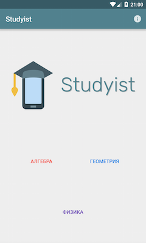
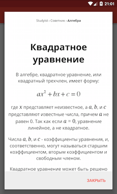
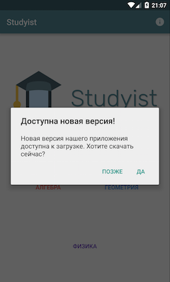

«Снова в школу» вместе с Studyist 1.0!
Привет, друзья! Сегодня - большой день для нас, ведь сегодня в свет выходит первая релизная версия нашего приложения - Studyist 1.0! По сравнению с 0.9.6, в этой версии появилось великое множество новых возможностей:
- Теперь наше приложение имеет обновленную иконку и новые официальные цвета - от режущих глаза ярко-голубых мы перешли к сине-серым оттенкам. Новая иконка теперь не является калькой с одной из иконок из бесплатного набора, а является нашей собственной разработкой.
- Всё приложение обрело цветность - теперь каждая категория окрашивает элементы интерфейса в свой цвет (красный, синий или фиолетовый).
- Теперь учиться стало проще, ведь наш “Советник” расскажет вам о всех тонкостях требуемой темы. Например, он может рассказать, почему в квадратном уравнении получаются именно такие ответы, или почему синус угла в 90 градусов - единица.
- А теперь о быстроте и чистоте кода: мы заменили все устаревшие классы и методы на их новые аналоги и убрали код, который никогда не затрагивается.
- Пока наше приложение недоступно в Google Play, оно само будет уведомлять вас об обновлениях, если таковые имеются.
- Кстати, мы обновили версию Gradle. Вам необязательно знать, что это такое, просто считайте, что это круто
- Так же имеют место быть мелкие улучшения, вроде изменения иконок и расположения элементов интерфейса
- Ну и наконец самое главное для вас обновление - приложение теперь говорит по-русски!
Обновление уже доступно на официальном сайте приложения: studyist.nikkeycompany.ru
Увидеть изменения можно на скриншотах:
  
Оставайтесь с нами, чтобы не пропустить свежайшие новости о нашей компании.